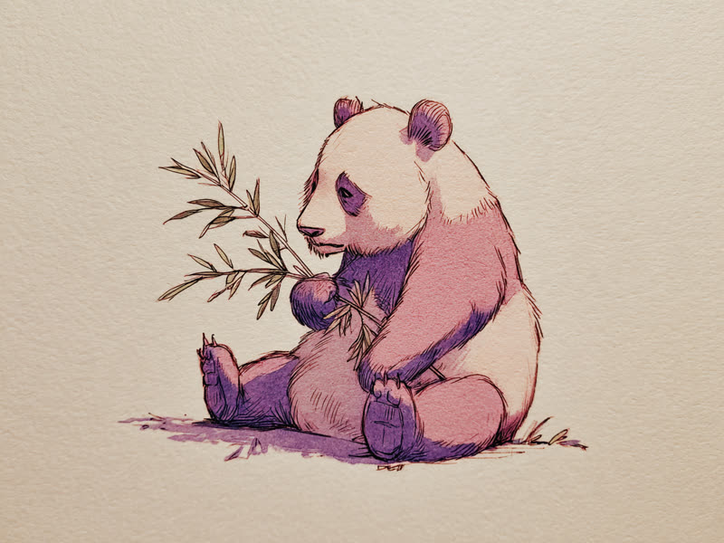

Why do pandas spend up to 14 hours a day eating? They're technically carnivores stuck with a bamboo-only diet their body was never built for.
クマ科なのに、消化器官は肉食動物のまま
パンダはクマ科の動物で、祖先は他のクマと同じく肉食寄りの雑食性でした。ところが進化の過程で主食を笹や竹に切り替えたにもかかわらず、消化器官は肉食動物向けの短い腸のまま変わらなかったと考えられています。草食動物のような複雑な胃や長い腸を持たないため、繊維質だらけの笹を消化する効率が非常に悪く、摂取したセルロースのうち体に吸収できるのはわずか1〜2割程度とも言われています。
効率が悪いなら、量と時間で押し切るしかない
栄養効率の悪さを補うためにパンダが取った戦略は、ひたすら大量に食べ続けることでした。1日に食べる笹や竹の量は体重の2〜4割にも達することがあり、体重100kgのパンダなら20〜40kg近くを平らげる計算になります。これを消化するために起きている時間の大半、1日およそ12〜14時間を食事に費やし、残りもほとんど休息にあてる超省エネ生活を送っています。せっかくの肉食動物譲りの俊敏な体を持て余し気味な、なんとも「ざんねん」な生態です。
赤ちゃんパンダも規格外に「ざんねん」
パンダのざんねんポイントはもうひとつあります。生まれたての赤ちゃんパンダは体重わずか100〜200g程度と、母親の体重の900分の1ほどしかなく、哺乳類の中でも極端に小さく未熟な状態で生まれてくることで知られています。目も開かず毛もほとんど生えていない姿で誕生し、母親に踏まれてしまう事故さえ報告されるほど。栄養効率の悪い食生活が繁殖にまで影響しているのではという説もあり、パンダの「ざんねんさ」は生まれた瞬間から始まっているのかもしれません。